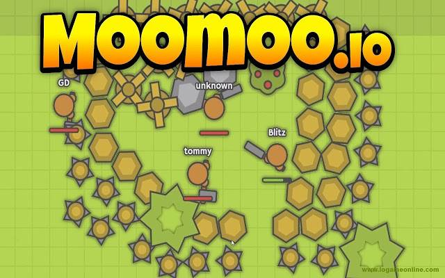
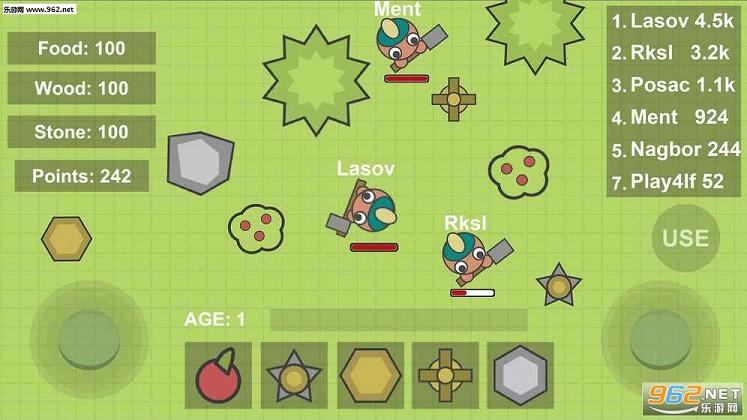
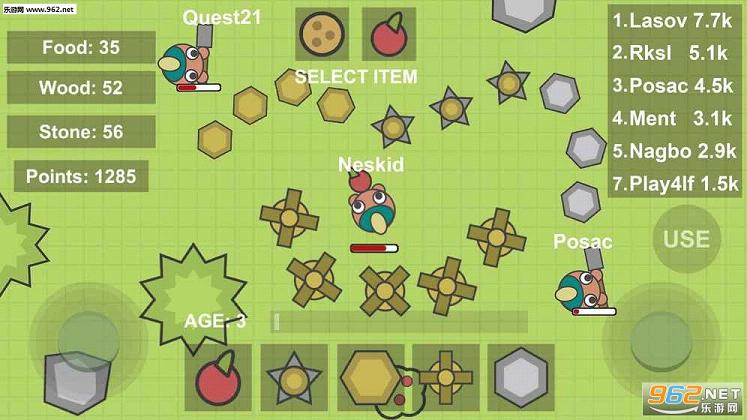
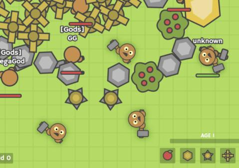

MooMoo.io is a multiplayer sandbox game where players build bases, gather resources, craft items, and defend against other players and AI enemies. The game combines survival mechanics with strategic base building and PvP combat. Whether you're playing solo or with friends, this guide covers essential strategies for thriving on the frontier.
🎮 Game Basics

Objective
In MooMoo.io, your goals are to gather resources, build a secure base, craft powerful items, and survive against AI animals and other players. There are multiple win conditions depending on your playstyle.
Resources
- Wood - From trees, used for basic structures and tools
- Stone - From rocks, used for stronger walls and tools
- Gold - From gold mines, used for advanced items
- Food - From berry bushes and farms, restores health
Controls
- WASD - Move your character
- Left Click - Attack / Gather resources
- E - Open/close inventory and crafting
- 1-9 - Select hotbar items
Health & Survival
Your character has 100 HP. Taking damage from enemies, falls, or other players reduces health. Food restores health. Death means losing your items and progress.
📦 Resource Gathering

Wood Collection
Start by gathering wood from trees. Walk up to trees and attack (left click) to collect wood. Early game, focus on getting at least 100 wood before expanding to other resources.
Stone Collection
After wood, seek out rock formations. Stone is harder to gather than wood but essential for better tools and walls. A pickaxe significantly increases stone gathering speed.
Gold Collection
Gold mines appear as golden rocks. They're rare but essential for advanced crafting. Protect gold mines aggressively—they're valuable resources.
Food & Health
Berry bushes provide quick food. Build farms for sustainable food production. Never let your health drop too low—vulnerability invites attacks.
Efficient Gathering Tips
- Always have a tool equipped for gathering
- Build a windmill near resources for bonus gathering
- Gather during peaceful periods when enemies are less active
- Create resource stockpiles near your base
🏠 Base Building

Base Layout Principles
A good base balances defense, functionality, and expansion space. Consider these factors:
- Central location for quick access to resources
- Natural barriers like mountains for extra defense
- Expansion room for future growth
- Multiple entry points for flexibility
Wall Types
- Wooden Walls - Basic, cheap, low durability
- Stone Walls - Stronger, mid-tier protection
- Spike Walls - Damage enemies but don't block movement
- Mine Walls - Detonate when enemies pass through
Essential Base Structures
- Mills - Generate resources passively
- Farms - Produce food automatically
- Watchtowers - Increase attack range
- Trees - Block enemy movement
- Traps - Damage invaders
Advanced Base Designs
The Fortress - Multiple wall layers with trap corridors. Enemies must navigate a killing field to reach your core.
The Bunker - Compact base with all essential structures. Efficient but limited expansion.
The Fortress-Mill Combo - Multiple windmills inside walls for maximum resource generation.
Don't make your base too obvious. Hide valuable structures inside walls. Use natural terrain as additional protection.
🔧 Crafting Guide
Tools
- Wooden Tool - Basic gathering tool
- Stone Tool - Better gathering, requires stone
- Gold Tool - Best gathering speed, requires gold
- Katana - High damage melee weapon
Weapons
- Wooden Sword - Basic melee weapon
- Stone Sword - Improved damage
- Gold Sword - Best melee option
- Bow - Ranged attacks, requires arrows
- Musket - Powerful ranged weapon, slow fire rate
Defensive Items
- Wooden Shield - Blocks some damage
- Metal Shield - Better protection
- Turret - Automated defense structure
- Trap - Damages enemies that step on it
Crafting Priority
Recommended crafting order:
- Stone tool (for faster gathering)
- Wooden walls (basic protection)
- Mill (passive resource generation)
- Farm (sustainable food)
- Stone walls (upgraded protection)
- Gold tool and weapons
🛡️ Defense Strategies
Passive Defense
Build walls and traps around your base. Position spike walls outside regular walls to damage attackers. Use turrets for automated defense.
Active Defense
Stay near your base to respond to attacks. When raiders approach, use your weapons to eliminate threats. Don't let enemies destroy your structures uncontested.
Anti-Raid Strategies
- Multiple fallback positions - If walls fall, retreat to inner defenses
- Hidden stockpiles - Keep resources in hard-to-reach places
- Trap corridors - Force enemies through killing zones
- Watchtower network - See enemies coming from far away
Dealing with Raiders
When enemies attack your base:
- Assess the threat—can you win?
- If yes, engage aggressively
- If no, retreat with essential resources
- Return later to rebuild or counter-attack

💎 Pro Tips
Build mills early. Windmills provide passive resource generation that compounds over time. More mills = faster resource accumulation.
Know when to fight and when to flee. Protecting your life is more important than protecting your base. Resources can be gathered again; death is permanent.
Team up with other players. MooMoo.io is much more fun and successful with allies. Coordinate attacks, share resources, and defend each other.
Position your mill wisely. Mills generate resources from nearby tiles. Place them where they have the most resource tiles in range.
❓ Frequently Asked Questions
What is the best base layout in MooMoo.io?
The best layout depends on your resources and goals. Generally, concentric layers of walls with traps in between work well. Multiple mills inside walls maximize resource generation.
How do I defend against stronger players?
Focus on defense over offense when outmatched. Build thick walls, use traps, and position turrets strategically. If they breach, retreat with resources and rebuild elsewhere.
What should I build first?
Prioritize: stone tool → walls → mill → farm. This gives you protection, resource generation, and food sustainability.
How do windmills work?
Windmills generate small amounts of resources from nearby tiles over time. Place them where they have the most trees, rocks, and gold mines in range.
Can I play MooMoo.io with friends?
Yes! Create a private room and share the code with friends. Team play allows coordinated base building, resource sharing, and combined defense.
📝 Conclusion
MooMoo.io rewards strategic thinking, efficient resource management, and smart base design. Build mills for passive income, craft powerful weapons, and construct defenses to protect your progress. Whether you play solo or with friends, these strategies will help you thrive on the frontier.
Ready to build? Jump into MooMoo.io and start building your dream base!
Last updated: January 20, 2024
Written by the iogameguide.com team